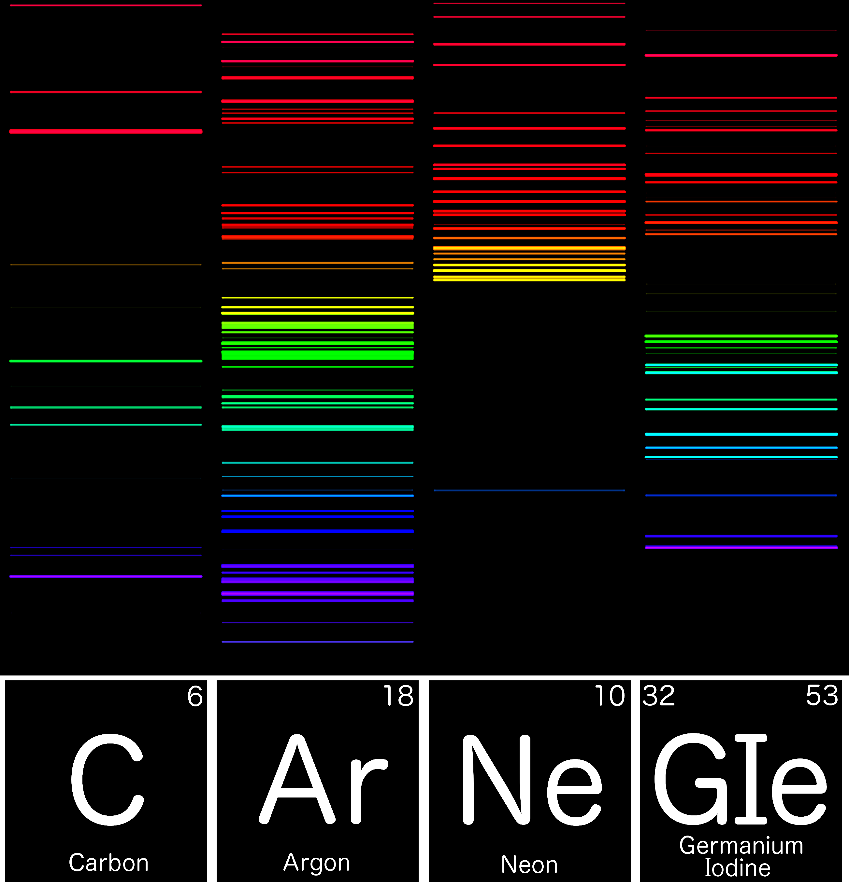
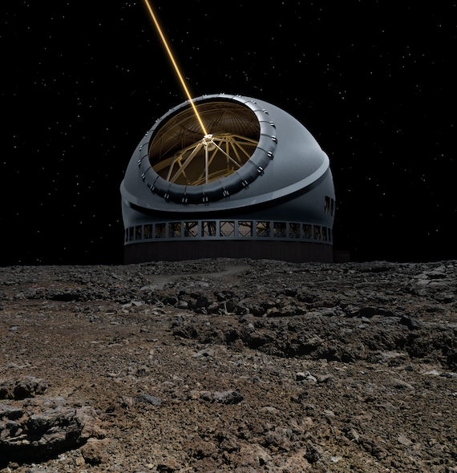
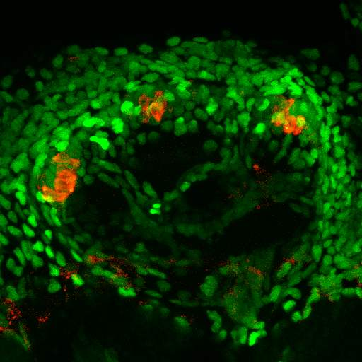
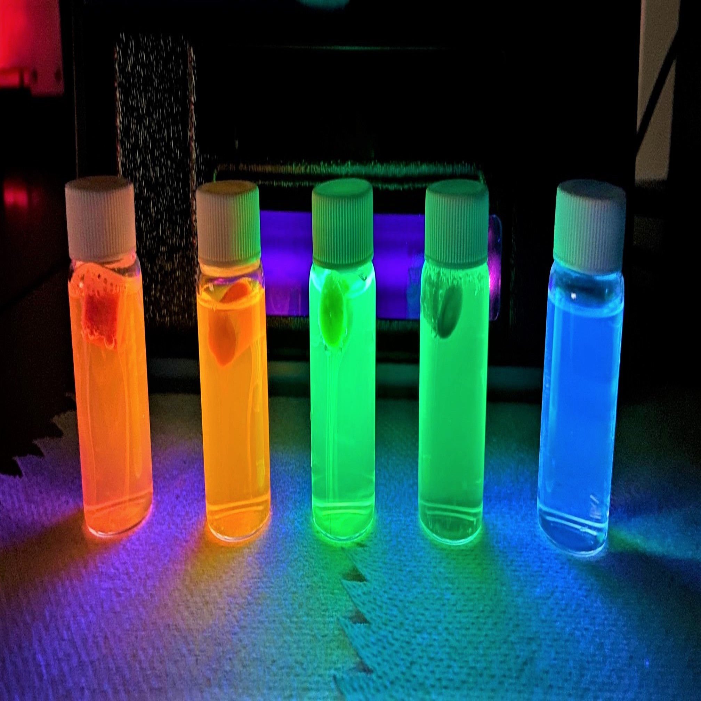

Enjoy family friendly talks and demonstrations about science and engineering! We’ll be joined by a number of speakers from Caltech, JPL, and Carnegie Observatories, who will tell us about the exciting work they do. Join for all of the talks, or pick and choose from the schedule. We look forward to learning with you!
Presentations
Carnegie Science

ISS Above

TMT

Biological Imaging

Chemistry

Immune Systems
Mars Rover
Schedule
Subject to change
5:30 - Welcome! 5:40 - Carnegie Observatories 6:00 - Chemistry 6:20 - ISS Above 6:40 - Biological Imaging 7:00 - Mars Rover 7:20 - Immune System 7:40 - Thirty Meter Telescope
Connect
Connect from your home on Zoom. More information will be posted soon.
Presented by Arroyo Vista PTA. Photos by Greg Rakozy and Fusion Medical Animation on Unsplash, and NASA/JPL-Caltech
Share: http://tiny.cc/avstem2021